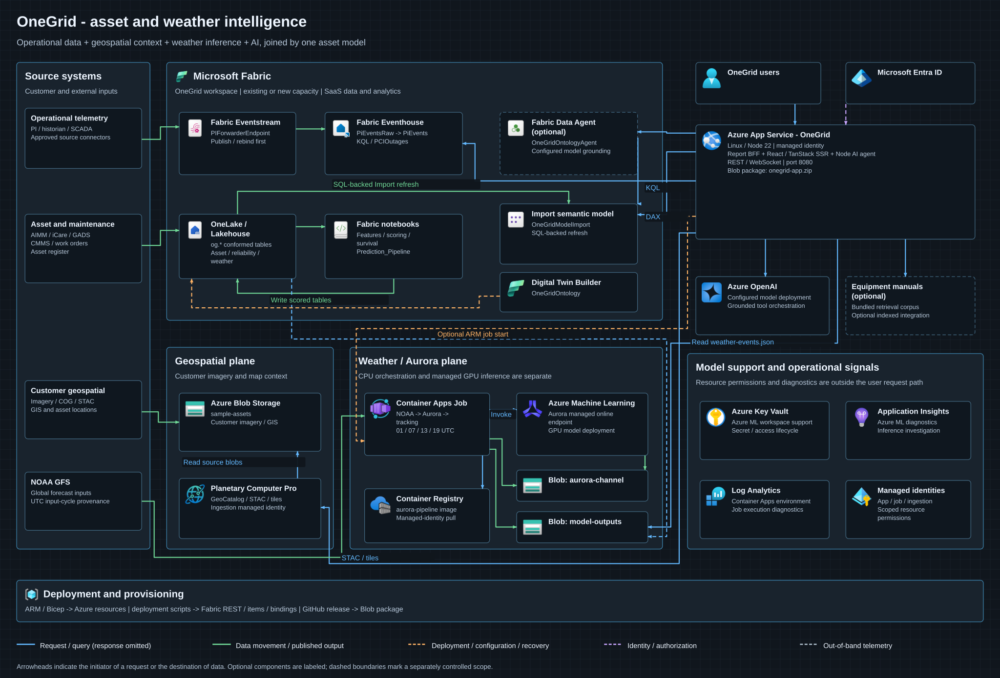
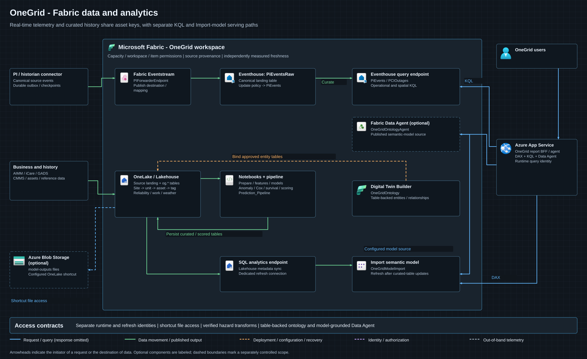
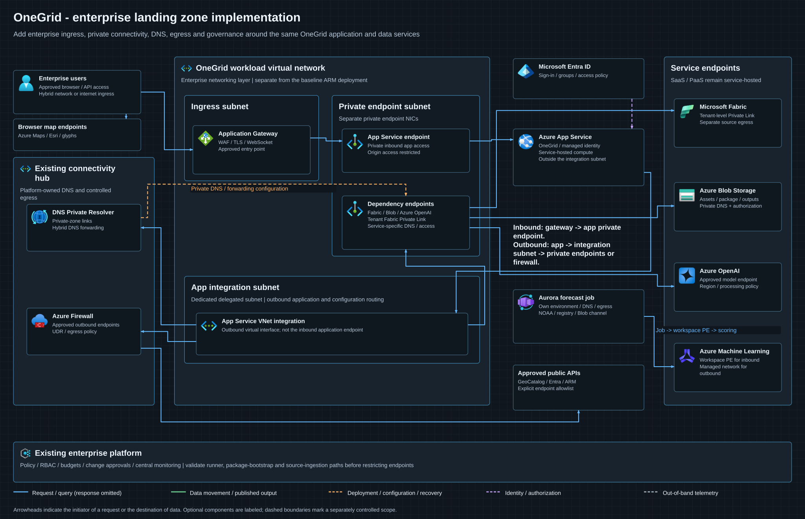
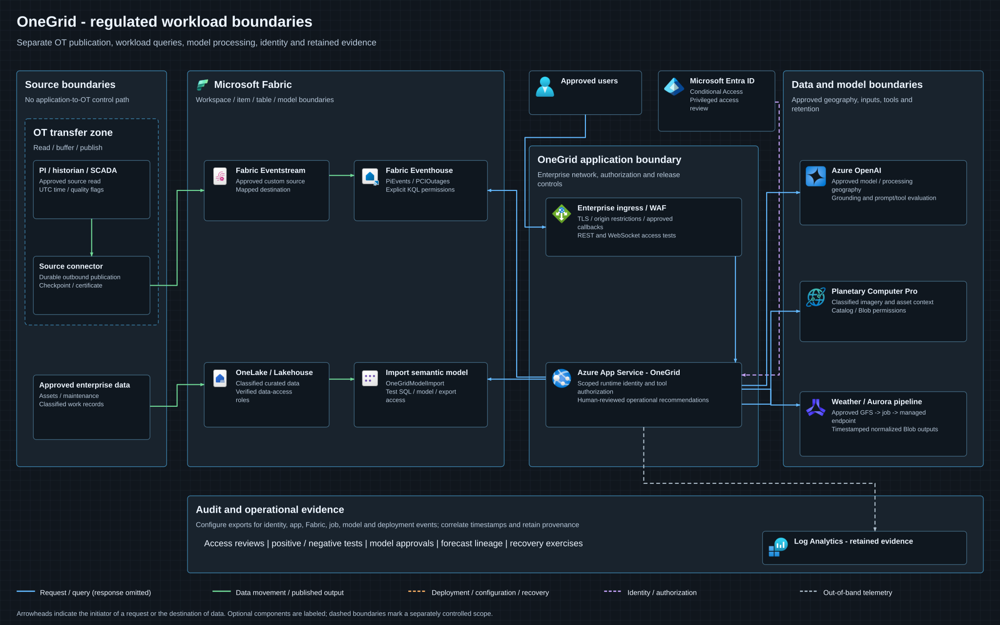
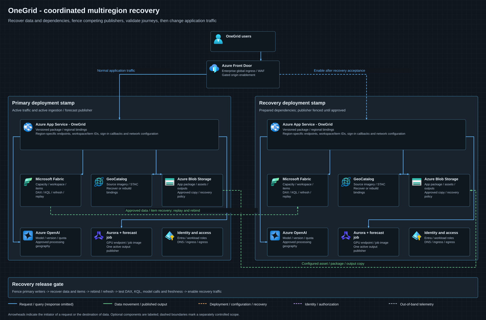

OneGrid architecture configurations
Dark, grid-backed views with official Microsoft icons, service details, controlled boundaries, and labeled traffic flows. Click a diagram to inspect it at full size.
Open the editable five-page draw.io document | Diagram guide and light versions
| Configuration | Design focus |
|---|---|
| Baseline | Operational data + geospatial context + weather inference + AI, joined by one asset model |
| Fabric data and analytics | Real-time telemetry and curated history share asset keys, with separate KQL and Import-model serving paths |
| Enterprise landing zone | Add enterprise ingress, private connectivity, DNS, egress and governance around the same OneGrid application and data services |
| Regulated workload | Separate OT publication, workload queries, model processing, identity and retained evidence |
| Multiregion recovery | Recover data and dependencies, fence competing publishers, validate journeys, then change application traffic |
Baseline
Operational data + geospatial context + weather inference + AI, joined by one asset model
Open scalable diagram | Open PNG



Fabric data and analytics
Real-time telemetry and curated history share asset keys, with separate KQL and Import-model serving paths
Open scalable diagram | Open PNG



Enterprise landing zone
Add enterprise ingress, private connectivity, DNS, egress and governance around the same OneGrid application and data services
Open scalable diagram | Open PNG



Regulated workload
Separate OT publication, workload queries, model processing, identity and retained evidence
Open scalable diagram | Open PNG



Multiregion recovery
Recover data and dependencies, fence competing publishers, validate journeys, then change application traffic
Open scalable diagram | Open PNG


